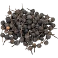

Correspondence Grimoire
Leucorrhoea
Type
Oils20

Cubeb Essential OilLeucorrhoea is a thick, whitish or yellowish discharge from the vagina that often signals a shift in the natural balance of the genital flora. Mild cases may follow stress, hormonal change, or irritation; persistent or strongly coloured, foul-smelling discharge points to bacterial, fungal, or trichomonal infection that warrants medical evaluation. Aromatherapy supports the body by easing inflammation, calming irritation, and restoring a healthier microbial environment around the vulva and vaginal canal.
Always dilute essential oils generously before any application near genital tissue, never apply neat. Use douches only occasionally and with medical guidance, as overuse disrupts the vaginal microbiome. Avoid douching during pregnancy. Patch test on the inner thigh before broader use, and discontinue if irritation, burning, or worsening discharge develops. Persistent, bloody, or strongly malodourous discharge requires professional assessment to rule out infection or other gynaecological conditions.
Suggested Application of Oils
- Bath: Disperse five to eight drops of essential oil in a tablespoon of unscented carrier (milk, honey, or fractionated coconut) and stir into a warm sitz bath. Soak for fifteen to twenty minutes, allowing the diluted oils to bathe the perineum and external genital tissue.
- Douche: Add one to two drops of essential oil to a teaspoon of carrier or a tablespoon of cider vinegar, then disperse fully in a litre of warm boiled water that has cooled to body temperature. Use no more than once or twice during an acute episode, and never as a routine practice.
Oils to Use to Address Leucorrhoea
 Bergamot Essential Oil
Bergamot Essential Oil Atlas Cedarwood Essential Oil
Atlas Cedarwood Essential Oil Texas Cedarwood Essential Oil
Texas Cedarwood Essential Oil Virginian Cedarwood Essential Oil
Virginian Cedarwood Essential Oil Cinnamon Leaf Essential Oil
Cinnamon Leaf Essential Oil- Cubeb Essential Oil
 Eucalyptus Essential Oil
Eucalyptus Essential Oil Frankincense Essential Oil
Frankincense Essential Oil Hyssop Essential Oil
Hyssop Essential Oil- Lavandin Essential Oil
 Spike Lavender Essential Oil
Spike Lavender Essential Oil- Lavender Essential Oil
 Marjoram Essential Oil
Marjoram Essential Oil Mastic Essential Oil
Mastic Essential Oil Myrrh Oil
Myrrh Oil Rosemary Essential Oil
Rosemary Essential Oil Clary Sage Essential Oil
Clary Sage Essential Oil Sandalwood Essential Oil
Sandalwood Essential Oil Tea Tree Essential Oil
Tea Tree Essential Oil Turpentine Essential Oil
Turpentine Essential Oil